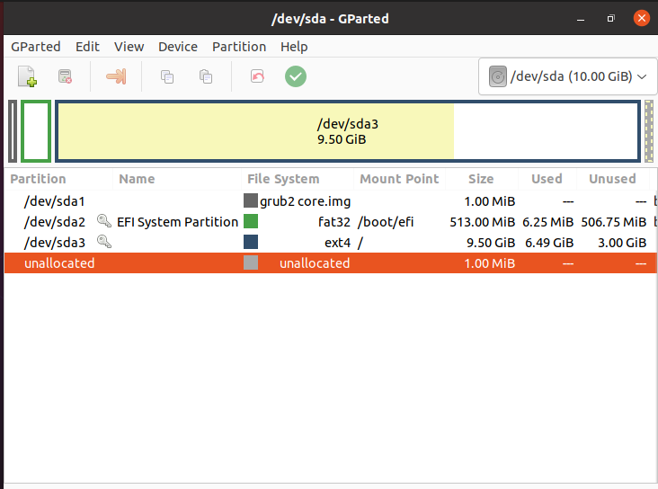
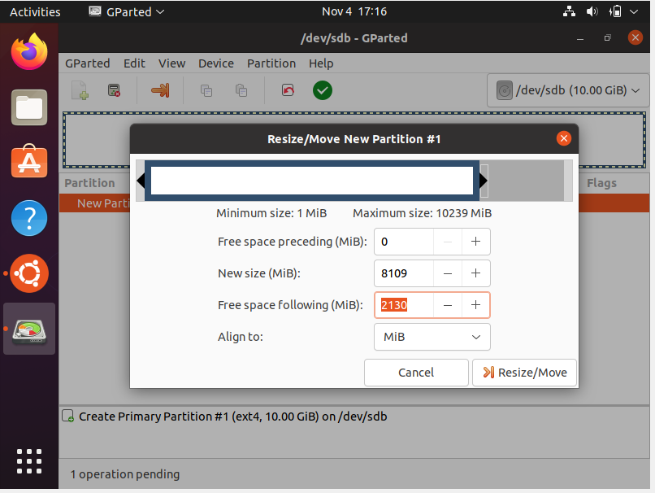

Langkah Langkah Partisi pada Sistem Operasi Open Source
1. Pertama, kita buka terlebih dahulu aplikasi “GParted”.
2. Setelah itu, kita klik kanan “unallocated” lalu pilih dan klik tombol “New”.
3. Pada kolom “New size” kita setting kapasitas untuk drive pertama sebanyak 32000 MB (32 GB) yang merupakan 80% dari total kapasitas harddisk saya yaitu 40 GB. Setelah itu kita klik tombol “Add”.
4. Setelah itu, kita klik kanan “unallocated” lalu pilih dan klik tombol “Resize”. Pada kolom “New size” kita setting kapasitas untuk drive kedua sebanyak 8959 MB (8 GB) yang merupakan 20% dari total kapasitas harddisk saya yaitu 40 GB. Setelah itu kita klik tombol “Add”.
5. Proses pembagian harddisk pun selesai dengan munculnya /dev/sda/1 sebagai drive pertama yang berkapasitas 80% dari total harddisk dan /dev/sda/2 sebagai drive pertama yang berkapasitas 20% dari total harddisk.